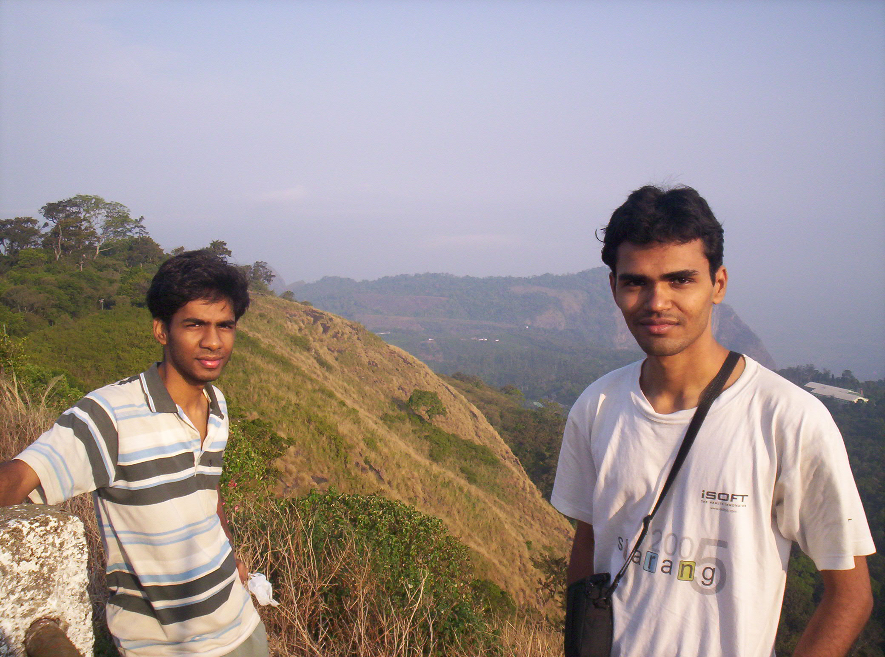
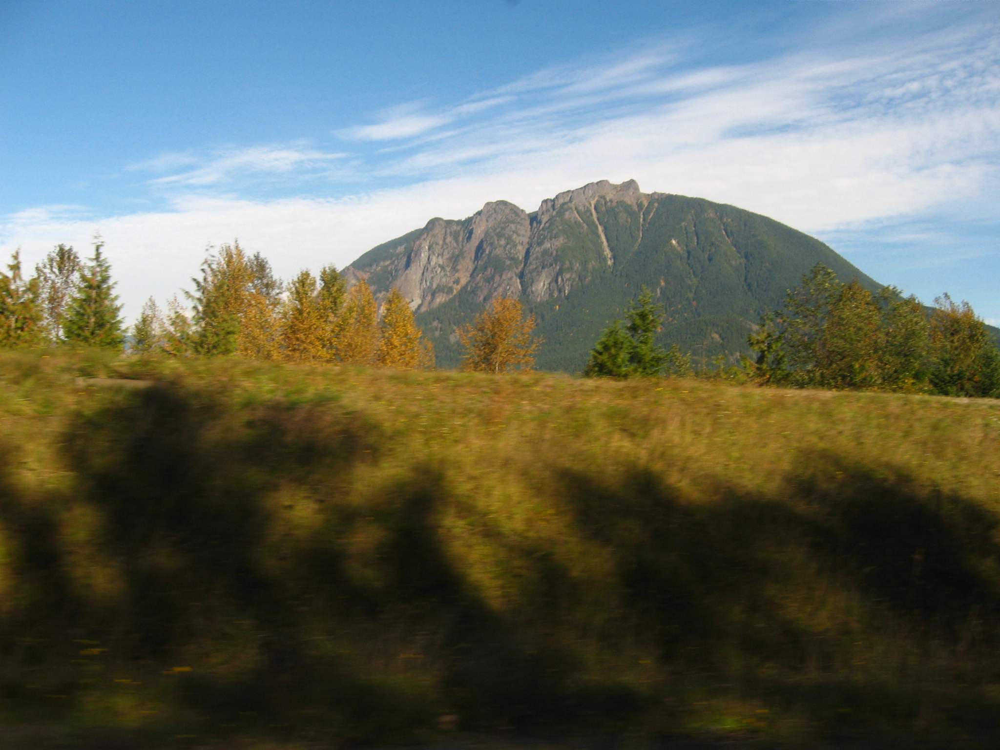
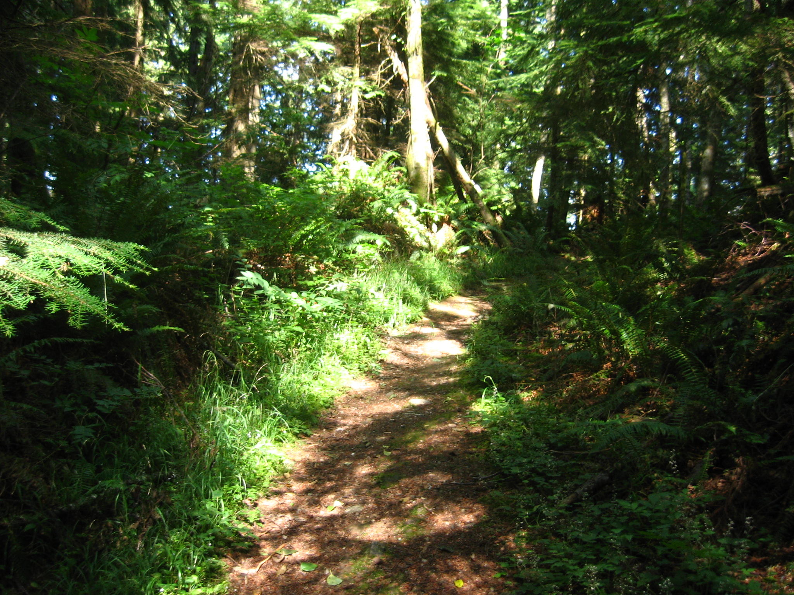
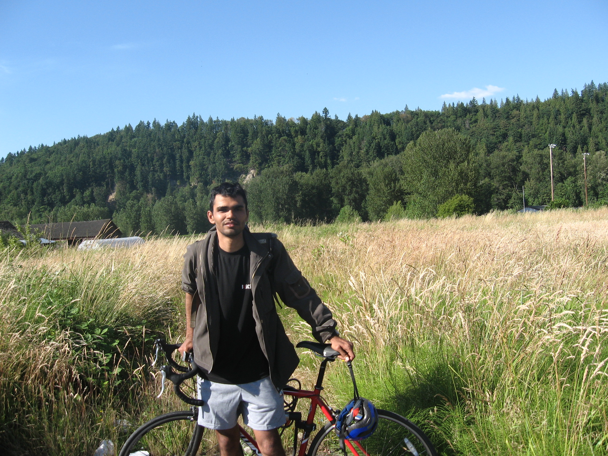

|
HobbiesMy hobbies include hiking,biking,running,reading interesting books and meditation. Hiking   This is one of the best things I have done in Seattle. Seattle, a place with abundant greenery is a hotspot for hikers and nature lovers alike. My favorite hikes have been the ones to Mount Rainier, Mount Si and Tiger Mountain. Biking A very easy and fun way to explore Seattle and its suburbs. Ofcourse, it helps if the weather is sunny. Books
Books have had and still do have a great influence on me. I seek inspiration and a broader perspective from the books I read. Thus, my books fall in the category of 'self-help’ and spirituality. Meditation
Meditation has been a great stress buster for me. Relaxation is a pre-requisite for meditation, but meditation goes deeper. After I began meditating 2 years back and having experienced its benefits I wondered, 'Why the heck didn't I begin this practice earlier’. Many of my meditations bring me a deep sense of inner peace. I mainly practice breath-based meditations. |